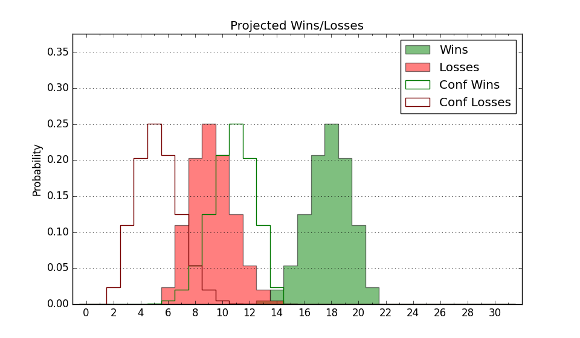

| Home | Game Probabilities | Conferences | Preseason Predictions | Odds Charts | NCAA Tournament |
| City: | New Britain, Connecticut | |
| Conference: | Northeast (3rd)
| |
| Record: | 2-2 (Conf) 9-6 (Overall) | |
| Ratings: | Comp.: -5.5 (219th) Net: -4.5 (211th) Off: 98.0 (294th) Def: 102.5 (117th) SoR: 0.0 (160th) |
| Remaining | ||||||
|---|---|---|---|---|---|---|
| Date | Opponent | Win Prob | Pred. | |||
| 1/18 | @ Fairleigh Dickinson (315) | 57.0% | W 71-69 | |||
| 1/24 | @ Le Moyne (336) | 63.9% | W 69-65 | |||
| 1/26 | Chicago St. (356) | 92.9% | W 71-54 | |||
| 1/30 | @ LIU Brooklyn (302) | 54.3% | W 63-62 | |||
| 2/1 | @ Stonehill (286) | 49.9% | L 64-65 | |||
| 2/6 | Fairleigh Dickinson (315) | 81.9% | W 75-65 | |||
| 2/13 | Mercyhurst (349) | 89.2% | W 69-56 | |||
| 2/15 | St. Francis PA (320) | 83.0% | W 72-61 | |||
| 2/20 | @ Chicago St. (356) | 79.4% | W 67-58 | |||
| 2/22 | Stonehill (286) | 77.2% | W 68-60 | |||
| 2/27 | Le Moyne (336) | 85.8% | W 73-61 | |||
| 3/1 | @ Wagner (347) | 67.0% | W 57-53 | |||
| Previous | Game Score | |||||
| Date | Opponent | Win Prob | Result | Off | Def | Net |
| 11/4 | @Providence (80) | 9.7% | L 55-59 | -3.4 | 15.5 | 12.1 |
| 11/8 | @Saint Joseph's (93) | 12.0% | W 73-67 | 15.9 | 13.3 | 29.1 |
| 11/16 | (N) Northeastern (203) | 46.6% | L 62-80 | -4.9 | -15.1 | -20.0 |
| 11/21 | @Sacred Heart (291) | 51.3% | L 54-67 | -20.7 | 2.1 | -18.6 |
| 11/24 | Binghamton (314) | 81.4% | W 64-56 | 1.1 | -3.5 | -2.5 |
| 12/1 | UMass Lowell (204) | 61.7% | W 69-67 | -9.8 | 6.9 | -2.9 |
| 12/4 | @Massachusetts (213) | 33.7% | W 73-69 | 9.8 | 3.9 | 13.7 |
| 12/7 | @Holy Cross (296) | 52.5% | W 69-56 | 5.6 | 15.9 | 21.5 |
| 12/15 | @Rhode Island (99) | 13.8% | L 69-77 | 8.7 | -1.1 | 7.6 |
| 12/18 | @Fairfield (327) | 61.2% | W 64-63 | -5.0 | 4.3 | -0.7 |
| 12/21 | Quinnipiac (218) | 63.8% | W 84-80 | 19.0 | -17.6 | 1.5 |
| 1/3 | @St. Francis PA (320) | 58.9% | W 74-59 | 9.7 | 7.0 | 16.7 |
| 1/5 | @Mercyhurst (349) | 70.8% | W 62-50 | -4.5 | 9.5 | 4.9 |
| 1/10 | Wagner (347) | 87.4% | L 57-62 | -7.8 | -15.5 | -23.3 |
| 1/12 | LIU Brooklyn (302) | 80.2% | L 52-54 | -18.0 | -3.4 | -21.4 |
| Stats & Trends | |||||
|---|---|---|---|---|---|
| Current | Day | Week | Month | Season | |
| Composite | -5.5 | +0.0 | -3.0 | -1.6 | +6.3 |
| Comp Rank | 219 | +1 | -32 | -14 | +76 |
| Net Efficiency | -4.5 | +0.0 | -4.0 | -4.1 | -- |
| Net Rank | 211 | +1 | -42 | -47 | -- |
| Off Efficiency | 98.0 | -0.2 | -2.2 | -1.0 | -- |
| Off Rank | 294 | -4 | -46 | -28 | -- |
| Def Efficiency | 102.5 | +0.2 | -1.7 | -3.1 | -- |
| Def Rank | 117 | +7 | -16 | -29 | -- |
| SoS Rank | 338 | -1 | -55 | -195 | -- |
| Exp. Wins | 17.8 | +0.0 | -2.4 | -0.3 | +4.5 |
| Exp. Conf Wins | 10.8 | +0.0 | -2.4 | -1.0 | +1.4 |
| Conf Champ Prob | 44.9 | +0.7 | -42.9 | -18.8 | +20.1 |

| Advanced Stats | ||
|---|---|---|
| Stat | Value | Rank |
| Off Eff FG % | 0.489 | 228 |
| Off Ast Ratio | 0.137 | 214 |
| Off ORB% | 0.240 | 294 |
| Off TO Rate | 0.164 | 287 |
| Off FT Ratio | 0.245 | 349 |
| Def Eff FG % | 0.509 | 174 |
| Def Ast Ratio | 0.152 | 223 |
| Def ORB% | 0.279 | 158 |
| Def TO Rate | 0.148 | 181 |
| Def FT Ratio | 0.225 | 7 |